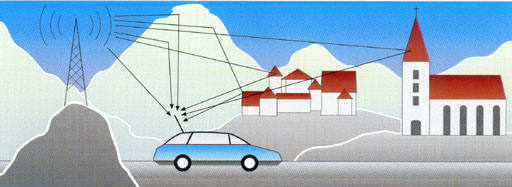

Probleemstellingen
zoveel mogelijk programma's in een zo klein
mogelijke bandbreedte.
dus comprimeren

alle zenders zenden uit op dezelfde frequentie
(geen gedoe meer met zenderverwisseling tijdens het rijden -
spaarzaam zijn met bandbreedte)
multipadontvangst (ook echo's) en overlap van
symbolen
symboolinterferentie (functie van golflengte)
verdwenen bits
foutcorrectie (codering) en multiplexing nodig
ISI functie van golflengte en dus ook van de
frequentie
systeem moet breedbandig zijn (ook goede frequenties
nodig)
zenders staan een afstand van mekaar
de overlap van symbolen zal een tijd duren
symbooltijd moet langer duren dan de overlap
vele carriers nodig om lange symbooltijd te
bekomen
nood aan een goede manier om de verschillende
carriers uit mekaar te halen (niet d.m.v. bandpasfilters: niet realiseerbaar)